+ ARCHITECTURE
architecture projects - as a part of: vilhelm lauritzen architects
projects in architecture practices
.trælasthuset
(2022)
for vilhelm lauritzen architects
as a part of the design team
.
project partner and design lead:
anne møller sørensen
.
design team:
mikkel søholt
marie goodstein
jakob holmqvist larsen
.
photos by sjavit maestro
.bella arena
(2020)
for vilhelm lauritzen architects + cobe
as a part of the design team
.
project partner and design lead:
dan stubbergaard + thomas scheel
design team:
anders villum lautrup
huge lebrunet
tim cousin
enzo nercolini
jakob holmqvist larsen
.
photos by jakob holmqvist larsen
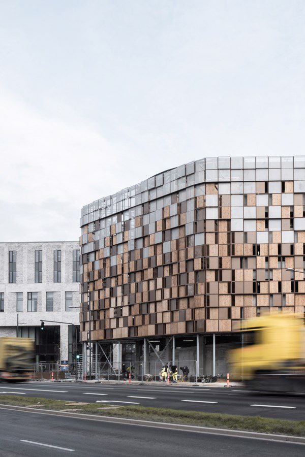
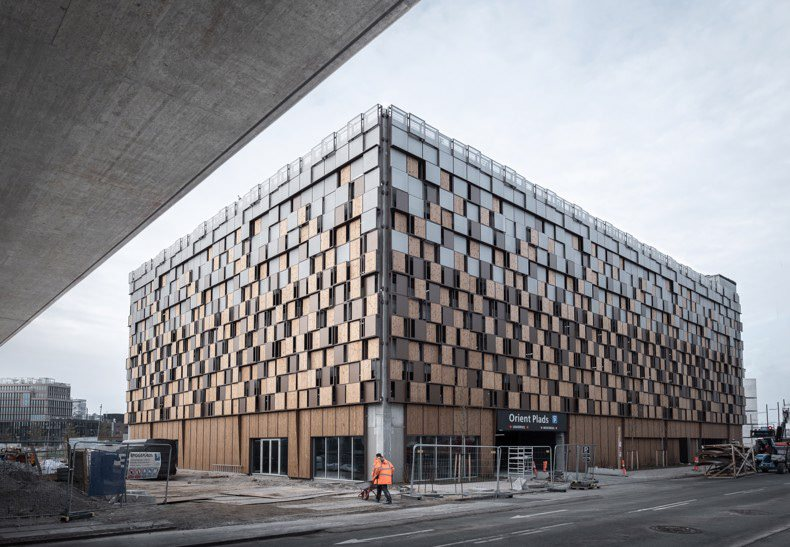
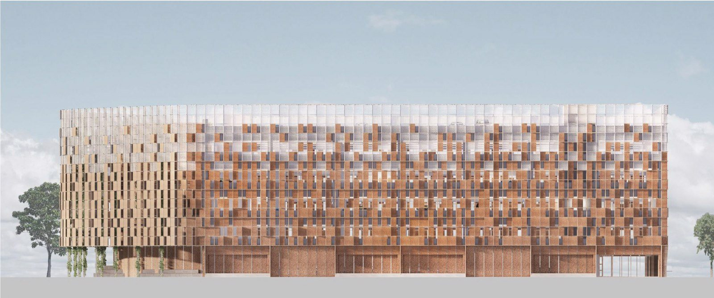
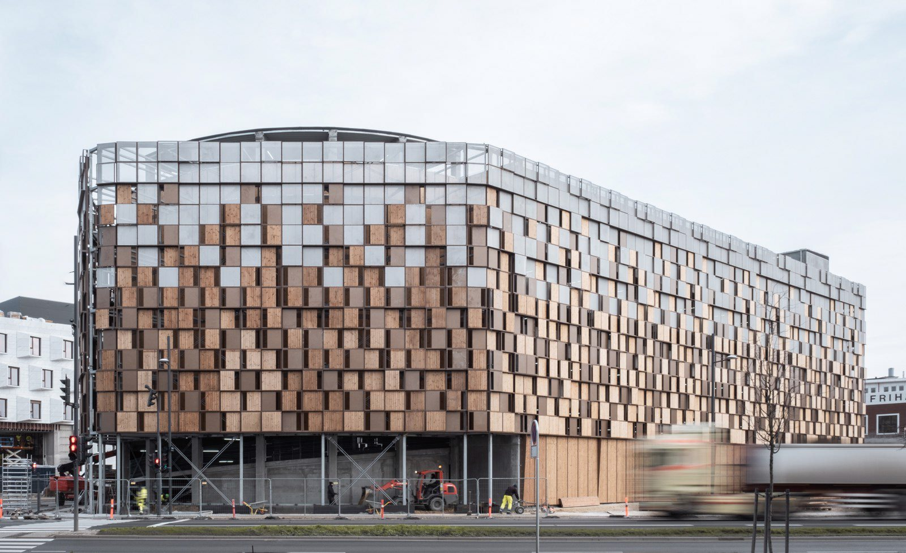
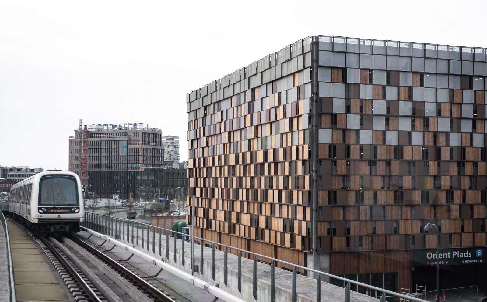
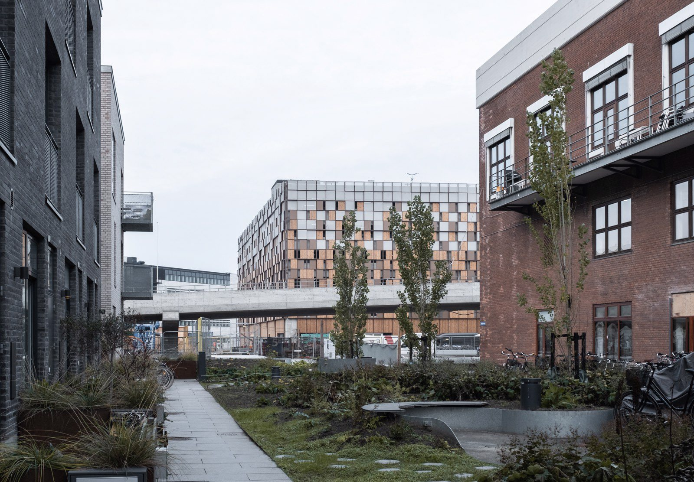
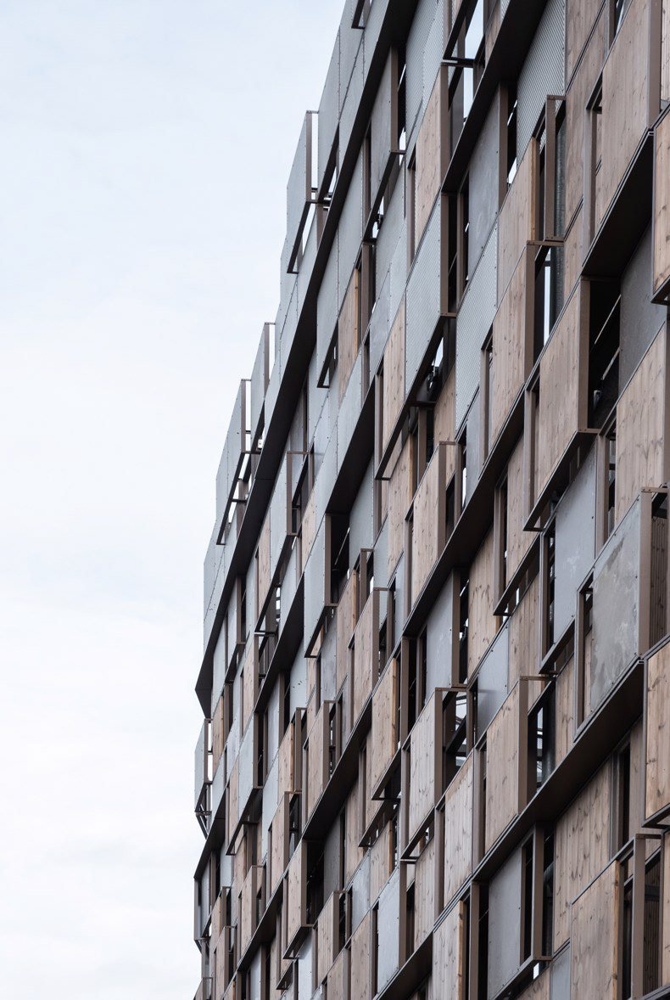
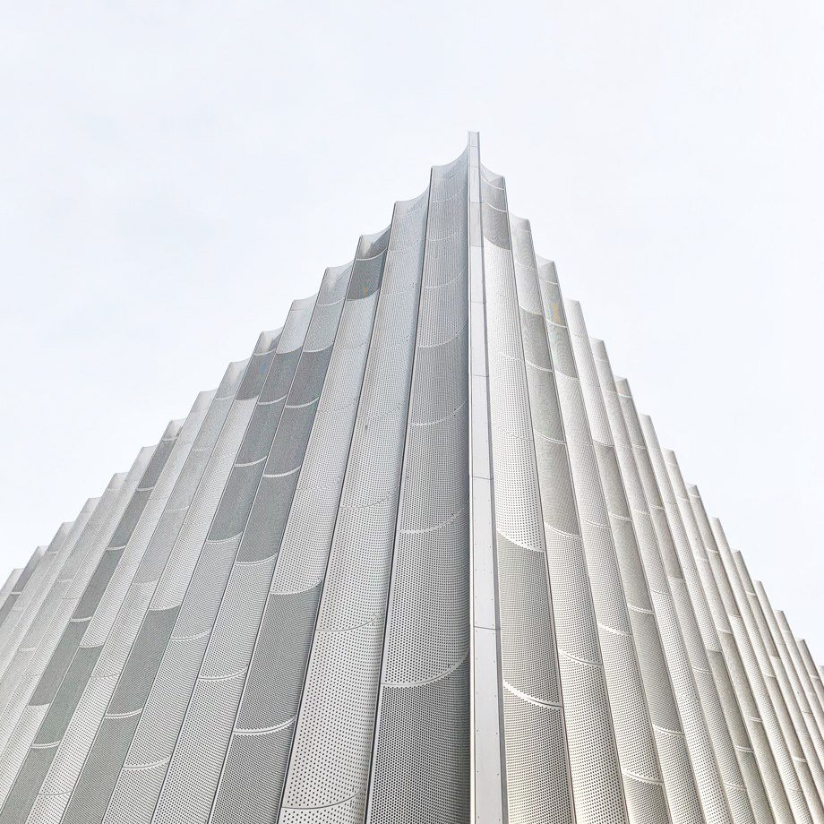
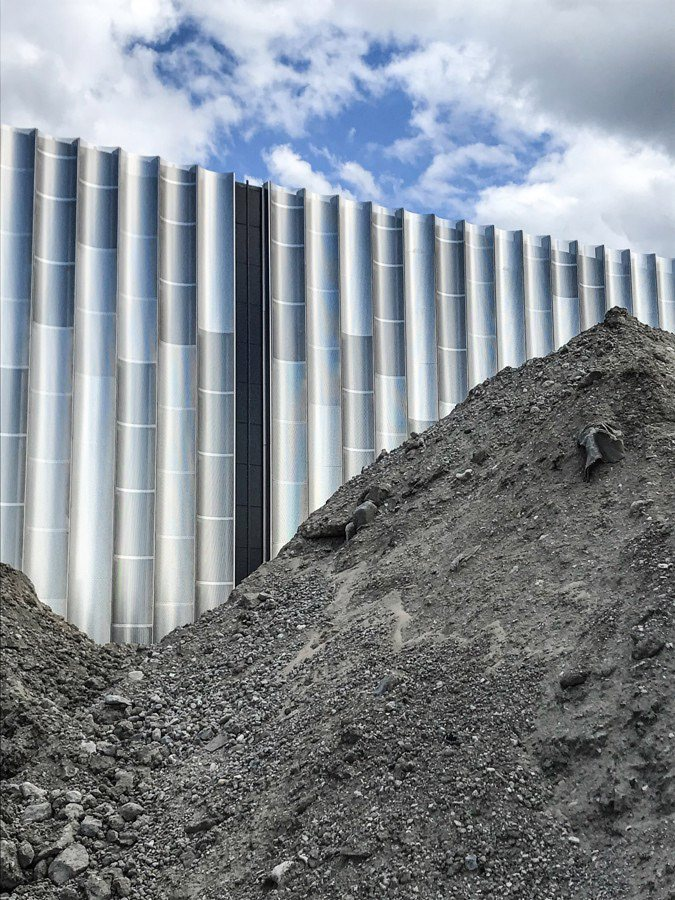
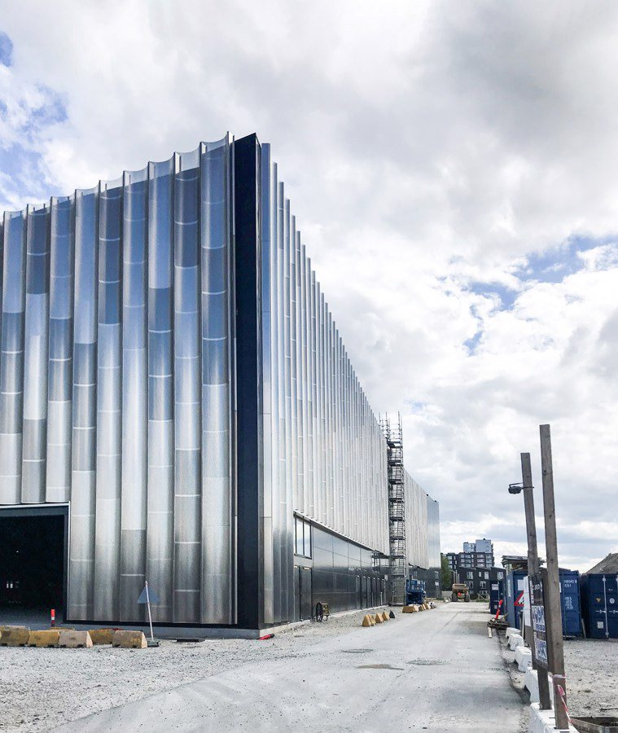
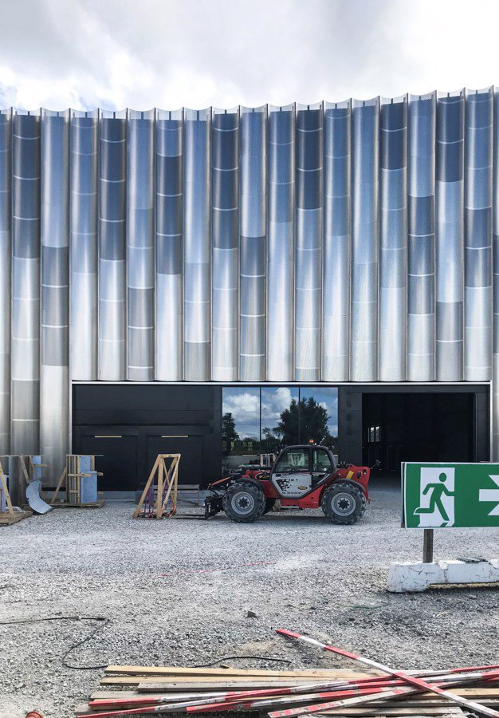
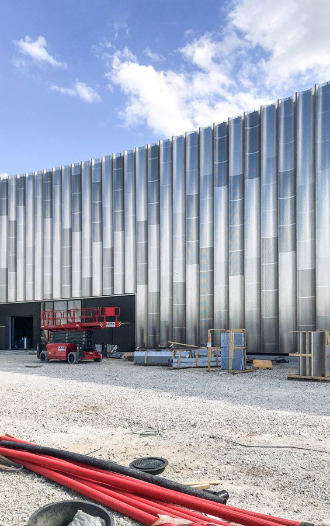
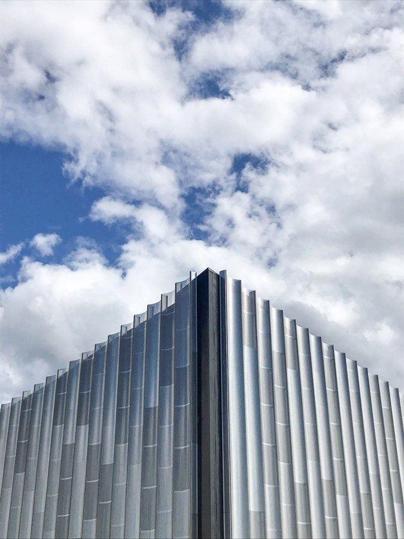
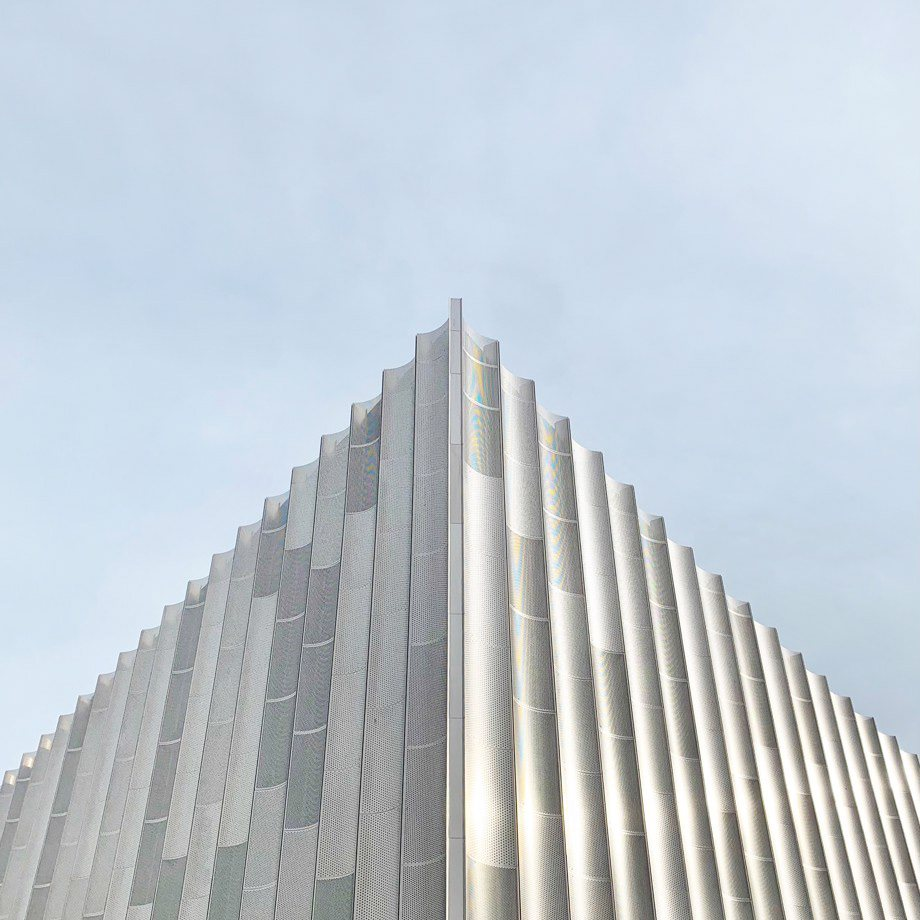